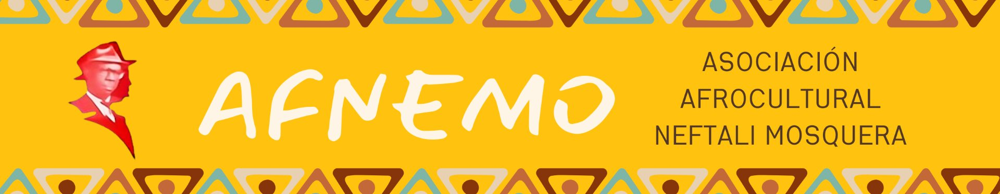

Defendemos los derechos humanos, económicos, sociales, políticos, ancestrales y culturales del pueblo negro afrocolombiano — desde la diáspora africana hasta el Pacífico colombiano.

Asociación Afrocultural · Bogotá · 2008
Nacimos en 2008 como una Asociación sin ánimo de lucro integrada por niñas, niños, jóvenes, mujeres y hombres, descendientes de la diáspora africana en la ciudad de Bogotá, en la localidad de Antonio Nariño.
La Asociación Afrocultural Neftalí Mosquera – AFNEMO vela por la defensa de los derechos humanos, económicos, sociales, políticos, ancestrales y culturales del pueblo negro afrocolombiano en Bogotá, desde la perspectiva de la diversidad étnico-racial que caracteriza nuestro país.
La Asociación fomenta la integración como mecanismo sanador y reparador de las comunidades negras y su diáspora que fueron desplazadas de sus territorios de origen como consecuencia del conflicto armado del país, con actividades en el ámbito local, nacional e internacional.
"Sólido pilar humano, moral e intelectual del Chocó — eminente jurista especializado en derecho laboral y penal, magistrado, fundador de colegios. Indiscutible autor del Bambasú."
Nació en Istmina el 18 de enero de 1914 · Murió en Quibdó el 13 de abril de 1990
AFNEMO se dedica a empoderar al pueblo afrocolombiano a través de la organización étnica autónoma, la etnoeducación y la participación democrática, promoviendo el ejercicio de sus derechos étnicos y ciudadanos.
Nos enfocamos en la protección y transmisión de saberes ancestrales, fomentando prácticas sostenibles que integren la salud y el bienestar de nuestras comunidades con la conservación del medio ambiente.
Para 2030, seremos una asociación líder a nivel local, nacional e internacional, reconocida por nuestro compromiso en la defensa de los derechos del pueblo negro-afrocolombiano y la protección de saberes ancestrales.
Nos destacaremos por nuestra capacidad para movilizar la solidaridad y el apoyo de instituciones estatales y sectores sociales en la lucha contra el cambio climático, promoviendo prácticas sostenibles que fortalezcan la resiliencia de nuestras comunidades.
Cada programa está diseñado para abordar las necesidades más urgentes de nuestras comunidades y generar un impacto duradero.
Formación en liderazgo, derechos humanos e incidencia política para jóvenes afrocolombianos de 14 a 28 años en zonas vulnerables.
Conoce más →Preservación y difusión de las expresiones artísticas afrocolombianas: música, danza, gastronomía y tradición oral de nuestros pueblos.
Conoce más →Capacitación, acompañamiento y financiamiento para emprendedores afrocolombianos que buscan transformar sus comunidades.
Conoce más →Brigadas de salud, atención psicosocial y programas de medicina tradicional en comunidades con acceso limitado a servicios de salud.
Conoce más →Formación en habilidades digitales y tecnológicas para mujeres afrocolombianas, cerrando la brecha digital y de género.
Conoce más →Defensa del territorio ancestral y proyectos de sostenibilidad ambiental en las regiones del Pacífico y Caribe colombiano.
Conoce más →Un equipo diverso y comprometido con la transformación social de las comunidades afrocolombianas.
Directora Ejecutiva
Director de Programas
Coordinadora Cultura Viva
Coordinador de Educación
Explora nuestro mapa institucional con la información georreferenciada de las iniciativas y presencia territorial de la asociación.